남은 UI · 원본/수정 전/수정 후 비교
원본(figma/)·수정 전(app/, 570c0c0)·수정 후(after/, 위젯 테스트 fixture 393×852, SafeArea 62/34)를 같은 폭으로 놓았다. 회색 영상·썸네일·기기명·날짜는 fixture 값이며 실제 데이터가 아니다. 측정값은 Figma specs와 위젯 렌더 rect/PNG 픽셀 경계 비교다. 실기기 키보드·회전·BLE·서버는 별도 검증 항목이다(RESULTS.md).
P01 — 모프 검색
상태: 수정 완료
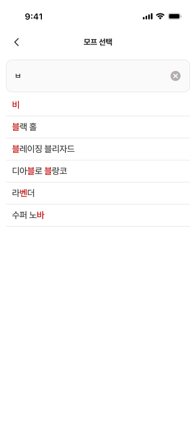
원본 Figma · figma/1043-4873.png
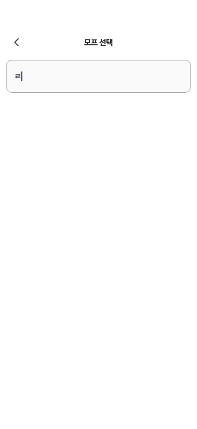
수정 전 · app/widget-morph-initial-search.png
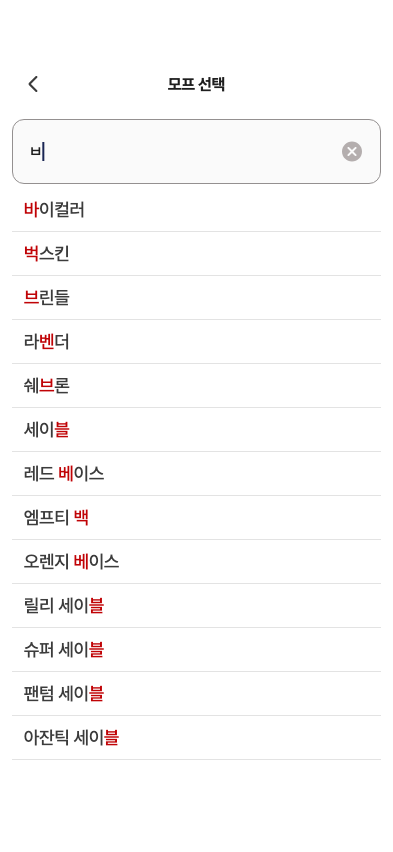
수정 후 · after/p01-morph-search-b.png
ㅂ 검색 (원본은 타 종 예시 이름, 앱은 크레스티드 카탈로그)
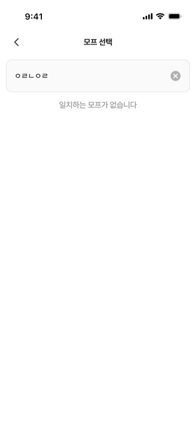
원본 Figma · figma/1043-5003.png
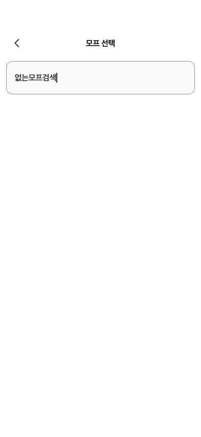
수정 전 · app/widget-morph-no-result.png
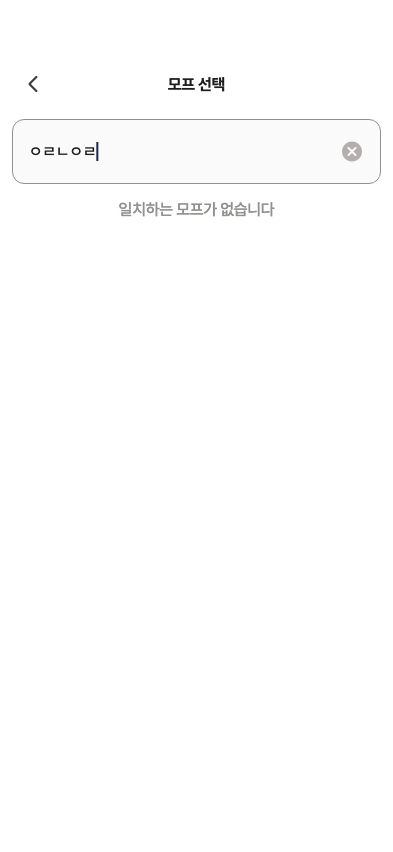
수정 후 · after/p01-morph-no-result.png
검색 결과 없음
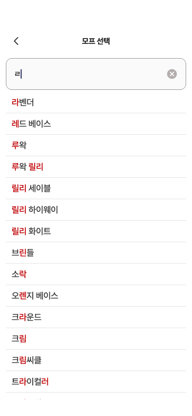
수정 후 · after/p01-morph-search-initial.png
ㄹ 초성 검색
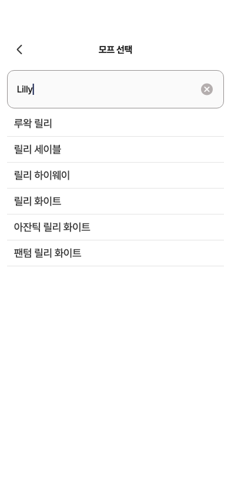
수정 후 · after/p01-morph-search-english.png
영문 검색 (강조 없음)
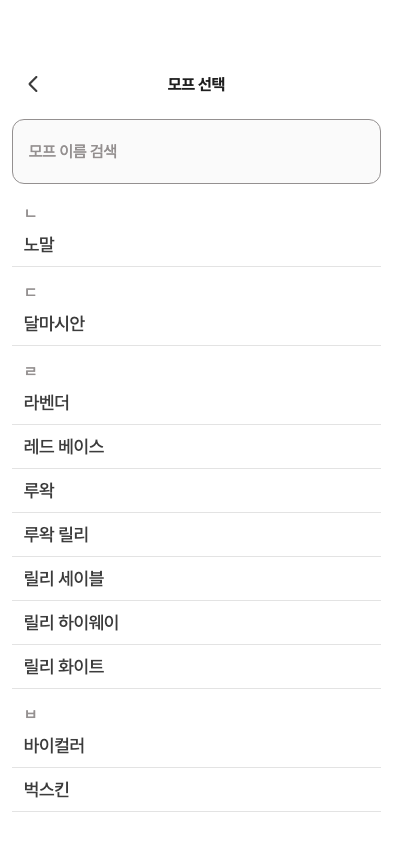
수정 후 · after/p01-morph-cleared.png
지우기 X 후 전체 목록
| 항목 | 원본 | 수정 후 | 판정 |
|---|
| 검색창 | x12 y119 w369 h65 r12 #FAFAFA/#E3E3E3 | x12 y119 w369 h65 (승인 29번 유지) | 일치 |
| 검색어 지우기 X | x340 y139.5 24×24 #B4AEAE | x340 y139.5 24×24 deviceOff(#B4AEAE), 탭 44×44 | 일치 |
| 결과 행 | x12 y188 w369 h44, 하단선 #E3E3E3 | x12 y188 w369 h44, 하단선 border | 일치 |
| 행 텍스트 | x24 y195.5 18/500/28/-0.36 #3C3C3C | x24 y196 18/500/28/-0.36 textSecondary | y 0.5pt 차이(행 44 내 28 중앙) |
| 강조색 | #C00306 | navSelected(#C00306) | 일치 |
| 강조 범위 | ㅂ→비·블(첫 음절)·디아블로 블랑코(두 곳)·벤·바 — 원본 내부 불일치(블레이징 블리자드는 첫 블만) | 모든 초성 일치 음절 강조 | 규칙 통일, 원본 예시와 부분 차이 기록 |
| 무결과 문구 | x24 y200 w345 h19 16/500/19.09/-0.32 #949090 중앙 | x24 y200 w345 h19 16/500/19/-0.32 textTertiary 중앙 | 일치 |
| 정렬 | 원본 예시: 비, 블랙 홀, 블레이징…, 디아블로…, 라벤더, 수퍼 노바 | 첫 일치 위치 → 이름 → id | 원본 예시 순서는 규칙 불명, 앱은 규칙 고정 |
- 원본 예시의 타 종 모프 이름은 앱 카탈로그에 넣지 않았다.
- 캡처는 위젯 테스트 fixture(393×852, SafeArea 62/34)이며 실기기 키보드는 시뮬레이터에서 별도 확인.
P02 — 개체 그룹 선택·등록 후 안내
상태: 수정 완료(기기 결합 확인 카드는 결정 대기)
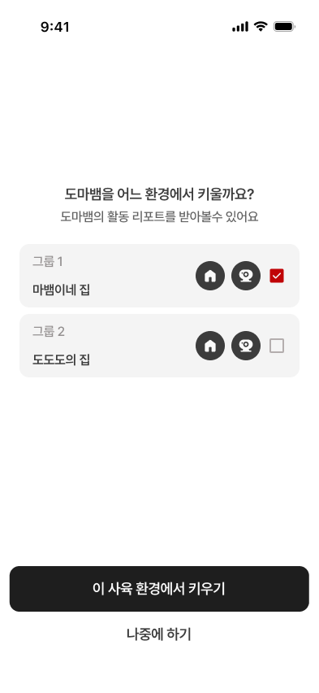
원본 Figma · figma/1043-3649.png
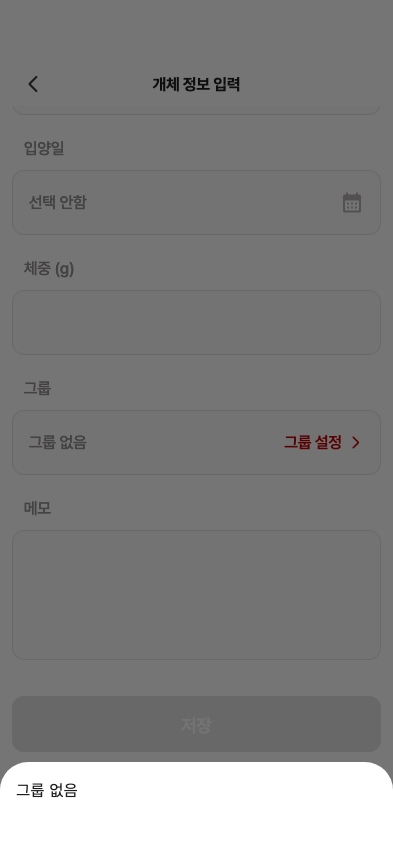
수정 전 · app/widget-pet-group-picker.png
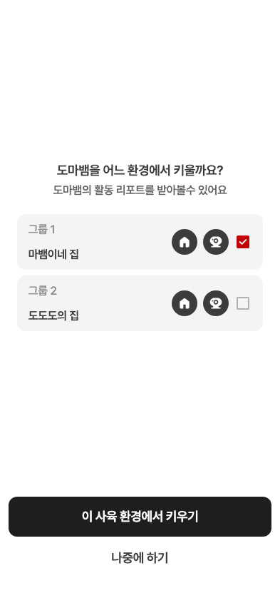
수정 후 · after/p02-group-picker-selected.png
그룹 선택 전체 화면(1개 선택)
원본 Figma · figma/1043-3649.png
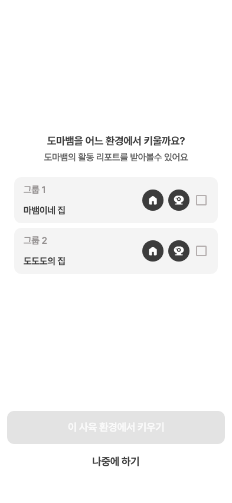
수정 후 · after/p02-group-picker.png
그룹 선택 미선택(CTA 비활성)
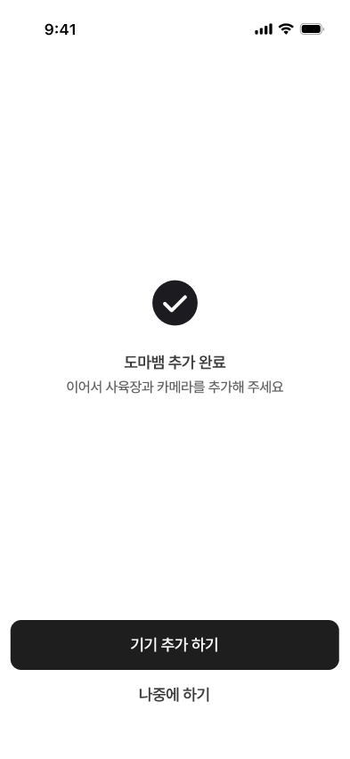
원본 Figma · figma/1035-2735.png
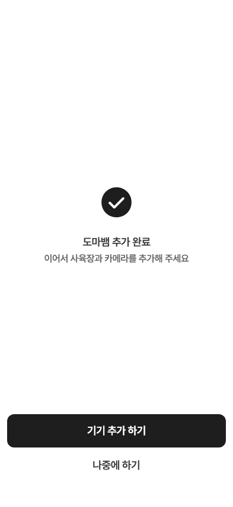
수정 후 · after/p02-pet-done.png
신규 등록 완료
| 항목 | 원본 | 수정 후 | 판정 |
|---|
| 제목/부제 | 24/228 18/600 중앙, 257 16/500 #626262 | 228/257 | 일치 |
| 그룹 카드 | 345×78 r12 #F4F4F4 x24 y300/386, 자동 이름 16/500 #949090 (40,312), 이름 16/600 (40,347) | 동일 | 일치 — 이전 ListTile 바텀시트 |
| 아이콘/체크 | 사육장 36 x241, 카메라 36 x285, 체크 24 (329,327) | 동일 | 일치 |
| CTA | 이 사육 환경에서 키우기 y696(미선택 비활성), 나중에 하기 y752 | 동일 | 일치 |
| 완료 화면 | 체크 64 (164.5,308), 도마뱀 추가 완료 y396, 부제 y425, 기기 추가 하기 y696, 나중에 하기 y752 | 동일 | 일치 — 신설 |
| 기기 결합 확인(994:13307·990:7508) | 도마뱀과 기기를 연결합니다 / 연결한 사육장과 함께 사용할까요? 카드 | 미구현 — 기존 그룹 편집 경로 유지 | P11 결정 대기(자동 결합 정책) |
- 자동 이름 "그룹 N"은 목록 순서 번호. 그룹 해제는 이 화면에 없고 사육장 연동 화면이 담당(원본에 그룹 없음 카드 없음).
- 저장 재시도 시 동일 개체 ID 재사용은 기존 세션 규칙 그대로.
P03 — BLE 검색·선택
상태: 수정 완료
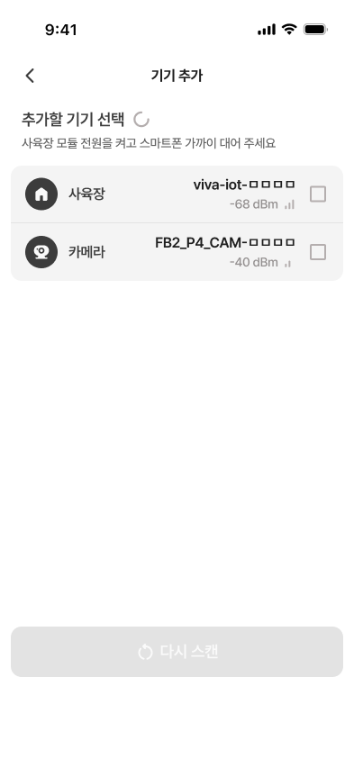
원본 Figma · figma/971-1837.png
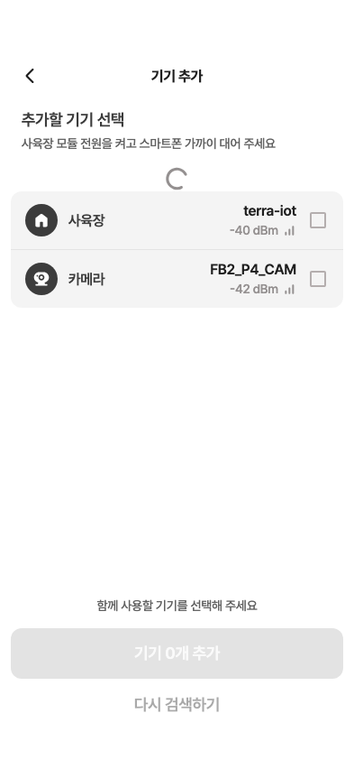
수정 전 · app/pairing-scan-busy.png
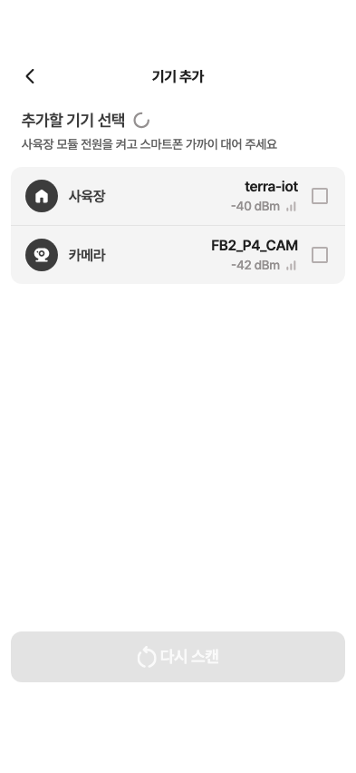
수정 후 · after/p03-scan-busy.png
스캔 중 (제목 옆 스피너, 회색 다시 스캔)
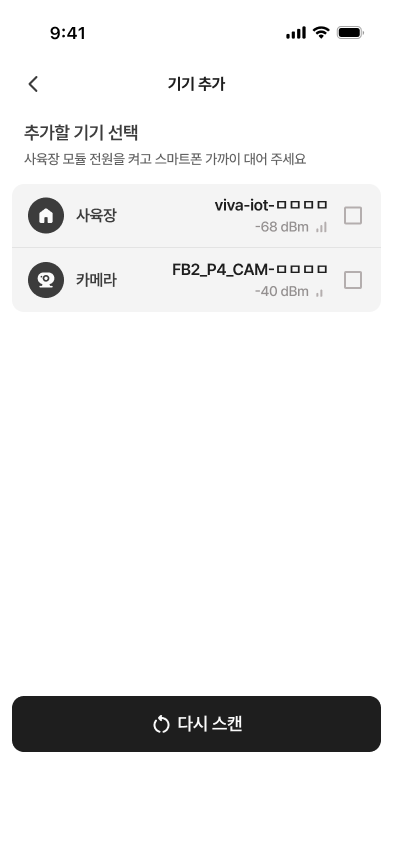
원본 Figma · figma/990-11220.png
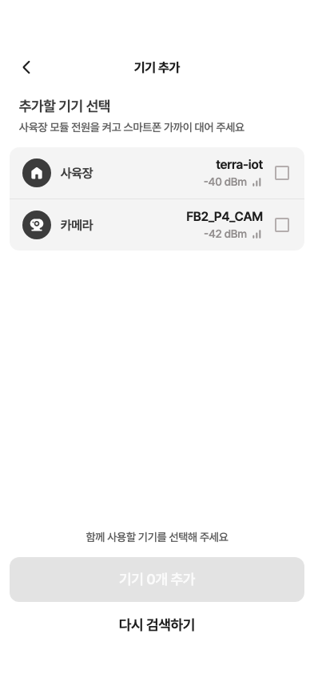
수정 전 · app/pairing-scan-unselected.png
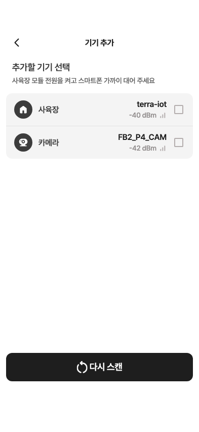
수정 후 · after/p03-scan-unselected.png
미선택
 원본 Figma · figma/990-7601.png
원본 Figma · figma/990-7601.png
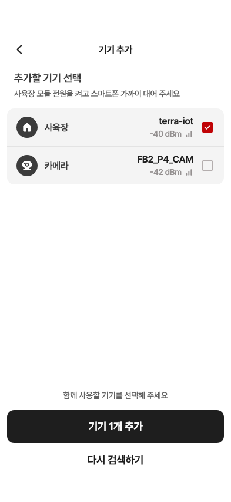
수정 전 · app/pairing-scan-one.png
수정 후 · after/p03-scan-one.png
1개 선택 + 안내
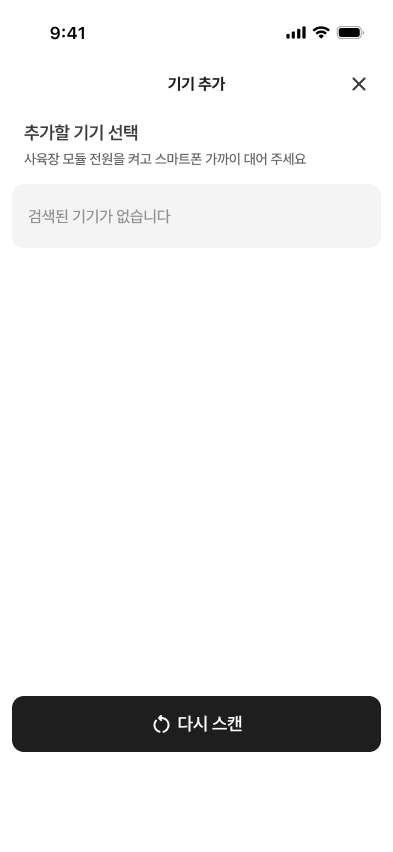
원본 Figma · figma/990-11450.png
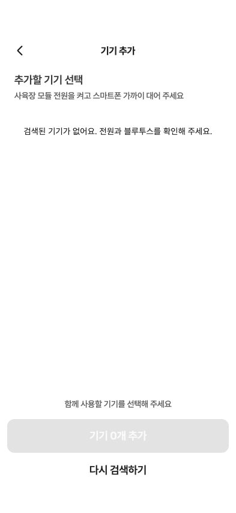
수정 전 · app/pairing-scan-none.png
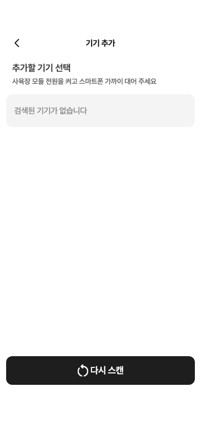
수정 후 · after/p03-scan-none.png
검색 결과 없음
| 항목 | 원본 | 수정 후 | 판정 |
|---|
| 제목/부제 | 24/122 18/600/21.48, 24/151 14/500/16.7 #626262, 스피너 20 x+8 | 동일(스피너 146.2/122.5) | 일치 |
| 목록 행 | 369×64 #F4F4F4 하단선, 아이콘 36 x28, 라벨 x76 16/600, 이름 우측 16/600 #1E1E1E, dBm 14/500 #949090 + 신호 16 #B4AEAE x313, 체크 24 x341 | 라벨 76/206.5, dBm 219, 신호 313/219.5, 체크 341/204 | 일치 |
| CTA | x12 y696 369×56: 미선택 다시 스캔(restart 24+4, 스캔 중 #E3E3E3), 선택 기기 N개 추가 #1E1E1E | 동일(아이콘 151.5 vs 149.5) | 일치(2pt) |
| 안내 | 함께 사용할 기기를 선택해 주세요 y667 (1개 선택 시) | y667 | 일치 |
| 빈 결과 | 369×64 r12 #F4F4F4, 검색된 기기가 없습니다 x28 16/500/28 #949090 | 동일 | 일치 — 이전 평문+긴 문구 |
| 재검색 진입 | 원본에 없음(선택 해제로 다시 스캔 복귀) | 선택 재탭=해제, 이전 별도 텍스트 버튼 제거 | 원본 패턴 유지 |
- 실제 RSSI·기기 이름 사용, 가짜 항목 없음. 320폭/큰 글자 overflow 테스트(기존) 통과.
P04 — Wi-Fi 목록·비밀번호·대기·오류
상태: 수정 완료(보안 정보는 결정 대기)
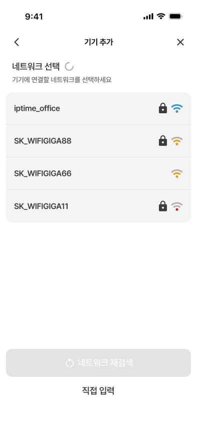
원본 Figma · figma/982-3103.png
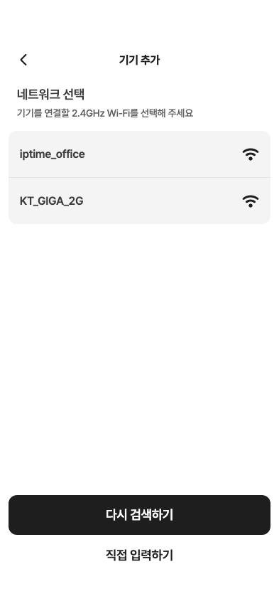
수정 전 · app/pairing-network-list.png
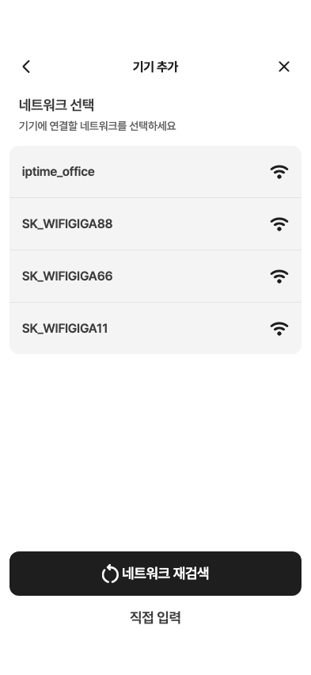
수정 후 · after/p04-networks.png
네트워크 목록 (잠금 그림은 AP 보안 정보 없어 미표시)
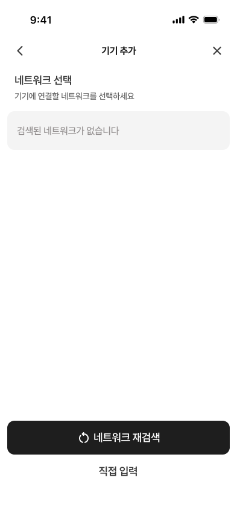
원본 Figma · figma/990-11380.png
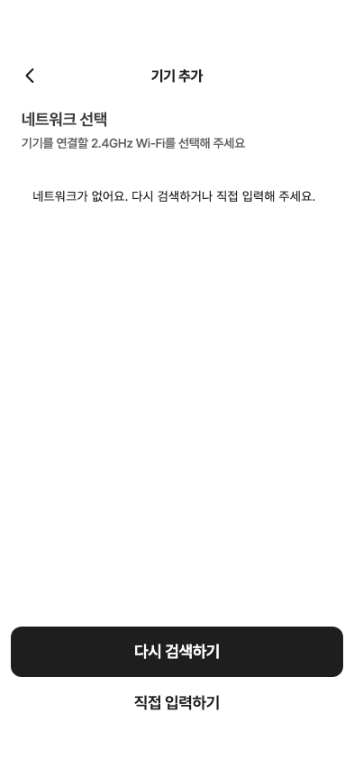
수정 전 · app/pairing-network-none.png
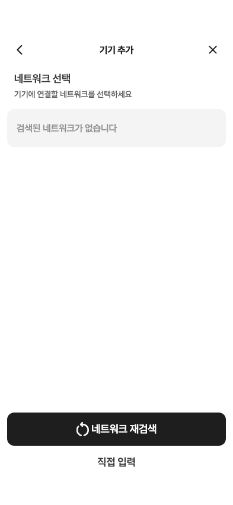
수정 후 · after/p04-networks-none.png
네트워크 없음
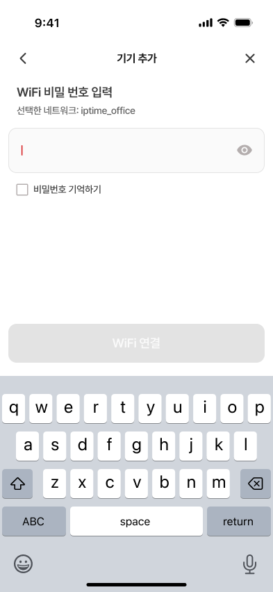
원본 Figma · figma/982-3174.png
수정 전 · app/pairing-password-empty.png
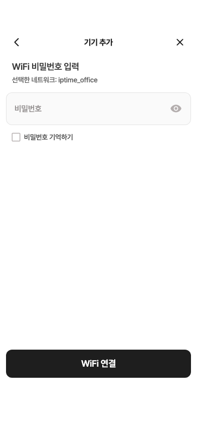
수정 후 · after/p04-password-empty.png
비밀번호 빈 상태 (CTA 활성 유지 — 결정 대기)
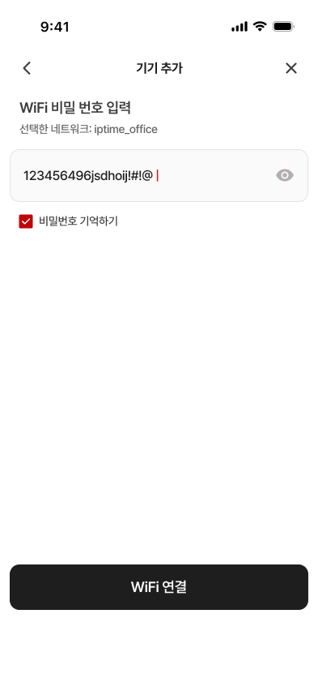
원본 Figma · figma/982-3413.png
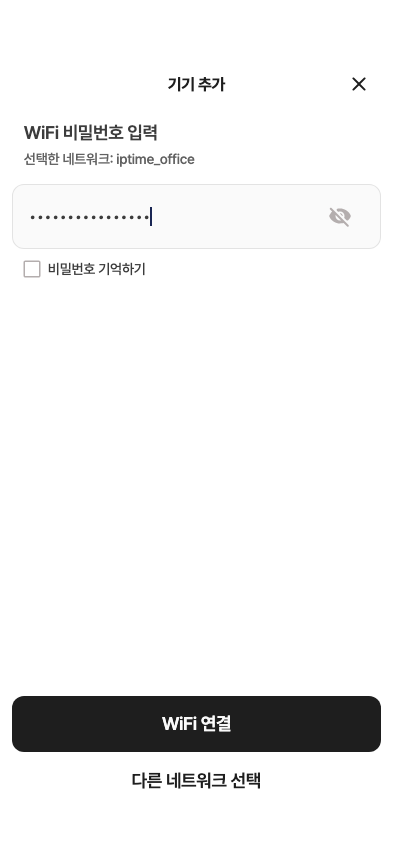
수정 전 · app/pairing-password-filled.png
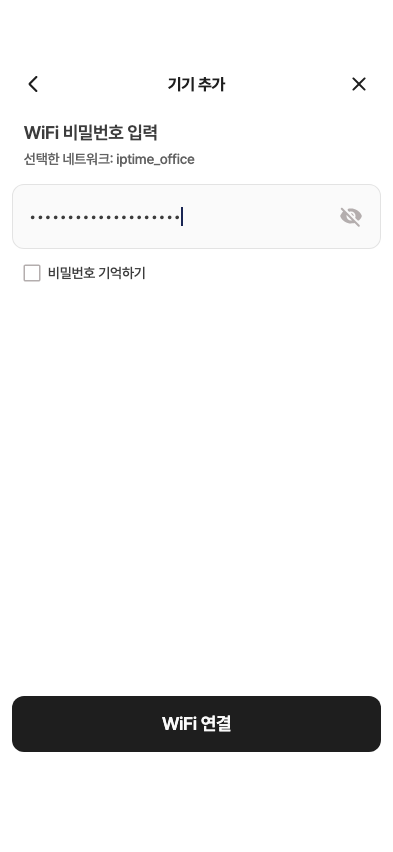
수정 후 · after/p04-password-filled.png
비밀번호 입력
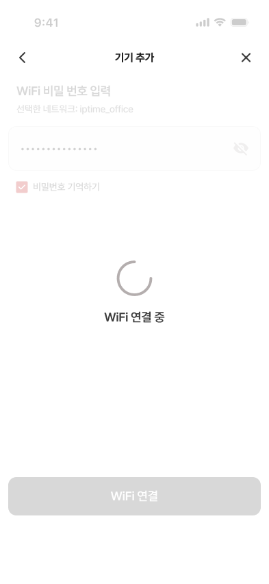
원본 Figma · figma/982-3604.png
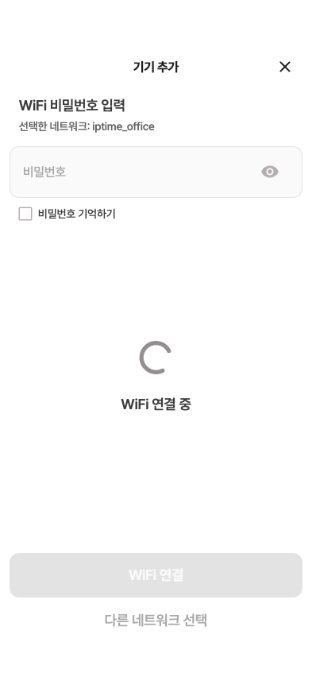
수정 전 · app/pairing-connecting.png
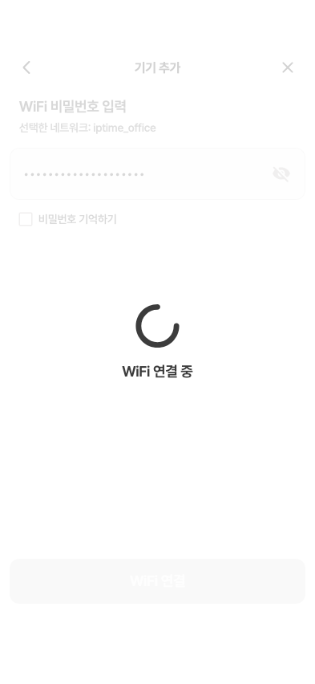
수정 후 · after/p04-connecting.png
연결 대기 overlay
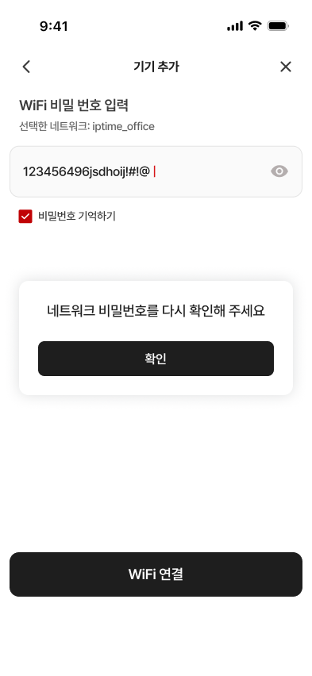
원본 Figma · figma/982-3500.png
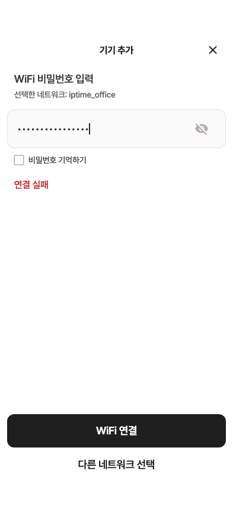
수정 전 · app/pairing-password-error.png
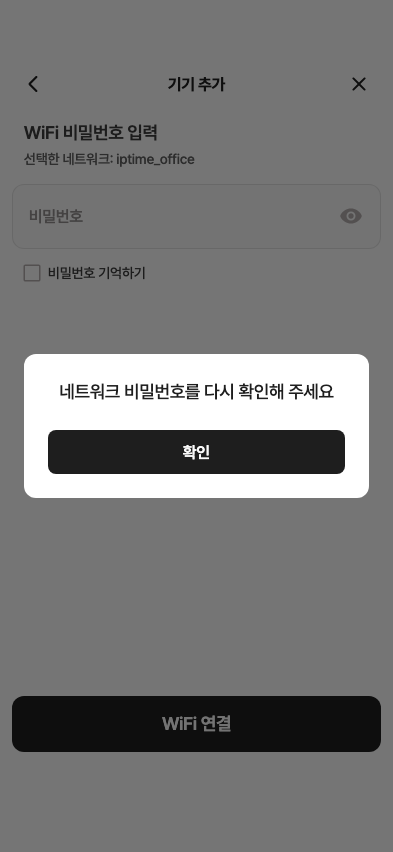
수정 후 · after/p04-password-error.png
비밀번호 오류 모달
| 항목 | 원본 | 수정 후 | 판정 |
|---|
| 네트워크 행 | 369×65, ssid x28 16/600 #3C3C3C, wifi 24 x341, 잠금 24 x313(보안 AP) | ssid 28/207, wifi 341/204.5, 잠금 미표시 | 일치(잠금 제외) |
| CTA 2단 | 네트워크 재검색 y696(restart) + 직접 입력 y752 18/600 #3C3C3C | 128.7/712·154/710·164.2/766 | 일치 |
| 상단바 | 뒤로 + 닫기(우 338) | 네트워크·비밀번호 단계 닫기 추가 | 일치 |
| 비밀번호 필드 | 369×65 r12 #FAFAFA/#E3E3E3 y184, 글자 x29, 눈 24 x340 | y184 h65, 눈 339/204.5(48 터치면) | 일치(1pt) |
| 기억하기 | 체크 24 x20 y261, 글 x48 14/500 #3C3C3C | 20/261, 48/264.5 | 일치 |
| 키보드 위 CTA | y466 (키보드 565 위 43) | viewInsets 287 → 466 (테스트) | 일치, 실기기 키보드 높이는 시뮬 확인 |
| 연결 대기 | 흰 Dim + 스피너 62 (165.5,375) + WiFi 연결 중 y449 | overlay 62 가운데 + 12 | 일치 |
| 오류 모달 | 345×144 r12 y354, 문구 18/500/28 y378, 확인 297×44 r8 y430 | 문구 378, 확인 438(글자) | 일치 |
| 빈 비밀번호 비활성/자물쇠 | 원본 회색 CTA·자물쇠 | AP 보안 정보 없음 → 활성 유지·자물쇠 미표시 | P11 결정 대기 |
- 모든 실패를 비밀번호 오류로 바꾸지 않았다: 결과가 전부 wifiFailed일 때만 모달+입력 유지, timeout/등록 대기는 기존 결과 화면.
- WiFi 비밀 번호 입력(원본 띄어쓰기)은 오탈자로 보고 기존 표기 유지.
P05 — 연결 완료·개체 선택
상태: 수정 완료
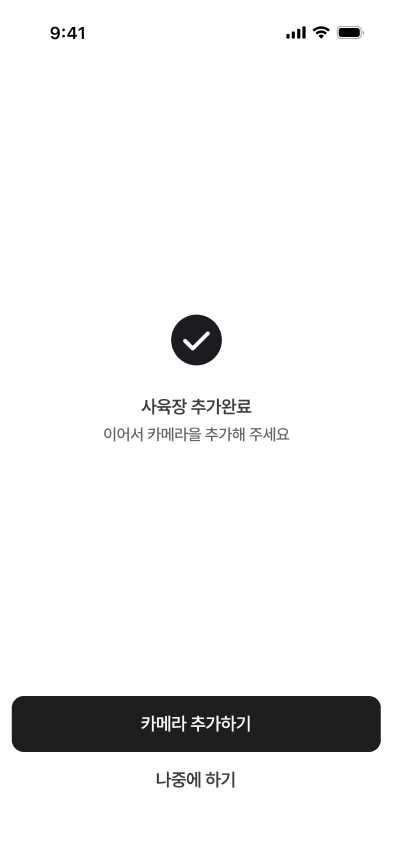
원본 Figma · figma/982-3643.png
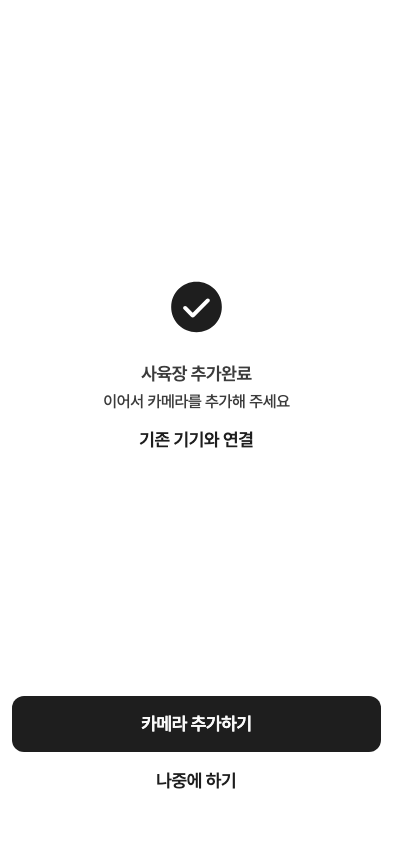
수정 전 · app/pairing-result-device.png
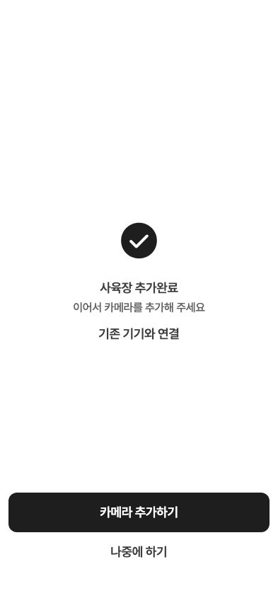
수정 후 · after/p05-result-device.png
사육장 완료
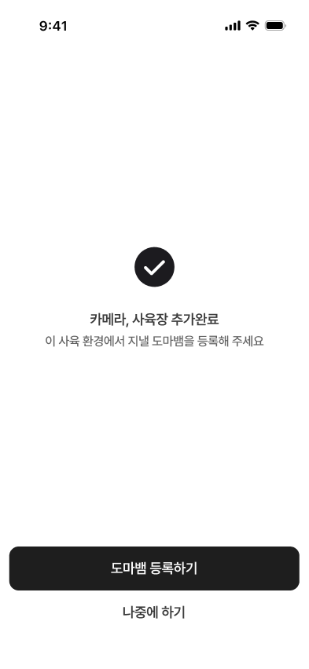
원본 Figma · figma/990-11583.png
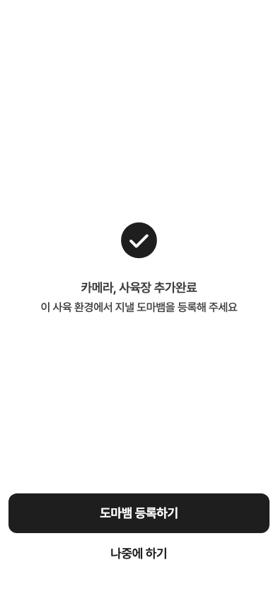
수정 전 · app/pairing-result-both.png
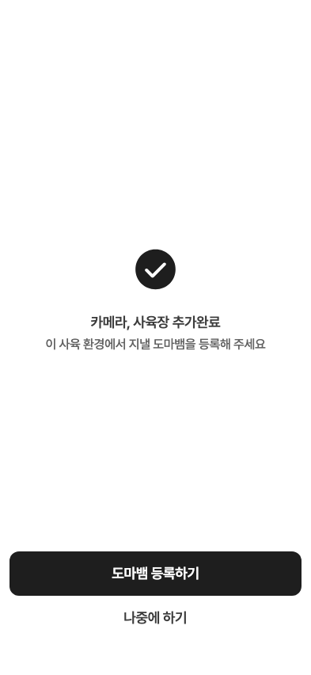
수정 후 · after/p05-result-both.png
둘 다 완료
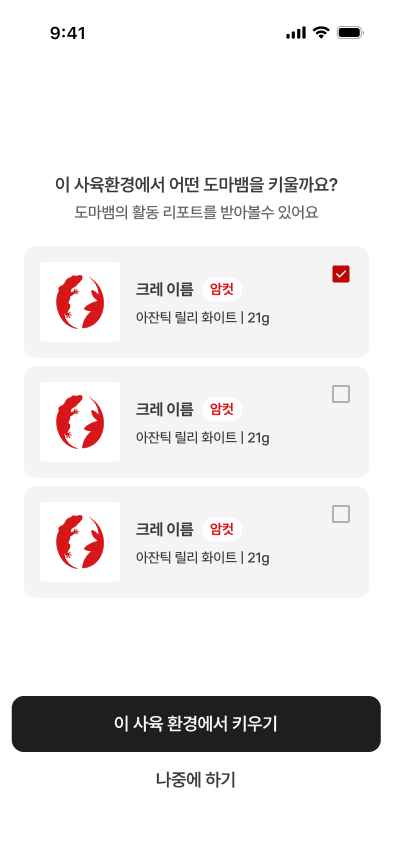
원본 Figma · figma/1043-5893.png
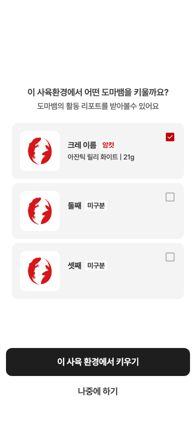
수정 전 · app/pairing-pet-selected.png
수정 후 · after/p05-pet-selection.png
개체 여러 마리
원본 Figma · figma/1043-5992.png
수정 전 · app/pairing-pet-small.png
수정 후 · after/p05-pet-single.png
개체 한 마리 (확인형 제목)
| 항목 | 원본 | 수정 후 | 판정 |
|---|
| 완료 블록 | 체크 64 (164.5,308), 제목 y396 18/600, 부제 y425 16/500 #626262 | 308/396/425 | 일치 — 이전 Spacer 배분 |
| 완료 CTA | y696 + 나중에 하기 y752 | 696/752(글자 710/766) | 일치 |
| 기존 기기와 연결 | 원본 없음 | 부제 아래 텍스트 버튼 유지(승인 경로) | 유지 |
| 개체 제목 | 여러 마리 y174 / 한 마리 y266, 부제 +29 | 174/203, 266/295 | 일치 |
| 개체 카드 | 345×112 r12 #F4F4F4 x24, 사진 80 r4, 이름 x136 y+34 16/700, 태그 40×24 r12 14/700 #D61619, 체크 24 x329 y+16 | 이름 136/281, 태그 209/282, 상세 308.5, 체크 329/262 | 일치(1pt) |
- 긴 이름/모프는 축소하지 않고 말줄임, 목록은 CTA 뒤로 스크롤(하단 여백 138).
- 부분 성공/등록 대기/실패 재시도는 원본 프레임이 없어 기존 복구 흐름을 새 footer 안에 유지.
P06 — 빈 화면·미연결 MyCre
상태: 수정 완료
원본 Figma · figma/1063-7793.png
수정 전 · app/redesign-home-empty.png
수정 후 · after/p06-home-empty.png
홈 빈 화면
원본 Figma · figma/1063-7731.png
수정 전 · app/redesign-camera-empty-isolated.png
수정 후 · after/p06-camera-empty.png
카메라 빈 화면
 원본 Figma · figma/1063-7663.png
수정 후 · after/p06-mycre-empty.png
원본 Figma · figma/1063-7663.png
수정 후 · after/p06-mycre-empty.png
MyCre 미등록
원본 Figma · figma/1107-9719.png
수정 후 · after/p06-mycre-unlinked.png
MyCre 개체 있음·카메라 미연결 (원본 1109 높이 프레임 상단)
원본 Figma · figma/990-11767.png
수정 후 · after/p06-management-empty.png
기기 관리 0개
| 항목 | 원본 | 수정 후 | 판정 |
|---|
| 빈 화면 그림 | x24 y250 345×227 | Empty_0*x3 scale3, 그림 첫 행 홈270/카메라297(원본 Group 271/291.6) | 일치 |
| 안내 문구 | y493 16/500/19.09/-0.32 #626262 중앙 | y493 16/500/19/-0.32 bodySecondary(#626262) | 색 #3C3C3C→#626262 수정 |
| CTA 홈/카메라 | x125.5 y547 142×56 r29.5 #C00306 | x127~266(AA 제외) y547 h56 StadiumBorder navSelected | 일치 |
| CTA MyCre 미등록 | x110.5 y547 172×56 | x111~282 y547 h56 | 일치(구 검정 전폭 r12 교체) |
| CTA MyCre 미연결 | x87.5 y285 218×56 | x88~305 y285 h56 | 일치(r28→Stadium) |
| CTA 내부 | pad24 + add24 + gap4 + 18/600/28/-0.36 #FAFAFA | 동일, buttonForeground(#FAFAFA) | 일치 |
| 기기관리 라벨/박스 | 라벨 y122·y249 #949090, 박스 369×64 r12 #F4F4F4 y153·y280, 내부 x28 | 라벨 y122·y249, 박스 y154~216·281~343(AA 제외), 내부 x28 | 일치(그룹 없음 박스 신설, 간격 20→32) |
| 기기관리 하단 CTA | x12 y696 369×56 r12 | x12 y696 369×56 (기존 ManagementButton) | 일치 |
- 긴 라벨은 Flexible로 줄바꿈되며 알약이 커진다(잘림 없음). 큰 글자 설정은 시뮬레이터 별도 확인.
- 시뮬레이터는 비로그인 상태라 로그인 필요 화면은 사용자 로그인 후 확인.
P07 — 온습도 그래프·제어 기록
상태: 수정 완료
원본 Figma · figma/1081-5052.png
수정 전 · app/widget-env-weekly.png
수정 후 · after/p07-env-weekly.png
주간 (값은 fixture, 원본 예시값 미복제)
원본 Figma · figma/1081-4873.png
수정 전 · app/widget-env-daily.png
수정 후 · after/p07-env-daily.png
일간 + 제어 기록 상단
원본 Figma · figma/1081-4873.png
수정 전 · app/widget-env-log.png
 수정 후 · after/p07-env-log.png
수정 후 · after/p07-env-log.png
제어 기록 (스크롤)
| 항목 | 원본 | 수정 후 | 판정 |
|---|
| 세그먼트 글자 | y131.5 14/600·700 16.7 줄높이 | y131.5 (줄높이 16.7 적용) | 일치 — 이전 +1 |
| 날짜 페이저 글자 | y181.5 18/600/21.48 | y181.5 | 일치 — 이전 +1·줄높이 26→21.5 |
| 일간 헤더 아이콘/최고최저 | 아이콘 y226.5, 문구 y261 14/500/16.7 | y226.5 / y261 | 일치 — 최고최저 줄높이 20→17 |
| 일간 마커 | y296 (32 띠 가운데) | y296 | 일치 — 이전 y294 |
| 일간 Y 라벨/X 라벨 | 45° y344(글상자 아래정렬), 오전 12시 y528 | 30° y344, 오전 12시 y528 | 일치 |
| 주간 헤더 | 아이콘 28 y238.5 복합색, 최고 28/600 #C00306, 최저 #949090 | FigmaIcon.metric 28 y238.5, 값 색 동일 | 일치 — 이전 단색 tint로 내부 글리프 소실·y221 |
| 주간 격자 | 가로 8줄(y277+32k), 세로 열 경계(대부분 실선, 목·금 경계만 점선) | 가로 8줄 + 세로 8줄 실선 chartGridLine | 규칙 통일(점선 2열은 원본 불일치로 미복제) |
| 주간 Y 라벨 | x355 12/500 #B4AEAE, 눈금선에 아래정렬(y309+32k) | x355, 아래선 y308.7+32k | 일치(0.3pt) |
| 주간 요일 | x열+4 y511 12/500 #B4AEAE 전부 | x16/64.7/… y511 deviceOff 500 | 일치 — 이전 중앙정렬·최고요일 강조 |
| 주간 막대 | 10×r5, 최고 #D61619/#2E408C, 최저 #B4AEAE, 그 외 #626262 | 10×r5 tempAccent/humidAccent, fillIcon, envBarNeutral | 일치 — 이전 8폭·최저 #A9B3BE |
| 주간 막대 수치 | 14/500/16.7 #626262, 최고 막대 상·하 #C00306/#192553, 막대와 4 | 14/500 bodySecondary, 최고 막대 상·하 valueColor, 간격 4 | 일치 — 이전 12pt·검정 |
| 온도→습도 블록 간격 | 40 (533→573) | 40 (518→558→아이콘 575.5) | 일치 |
| 제어 기록 패널 | y584 #FAFAFA 상단선, 제목 y604 18/700/20, 행 y644/704(60), 이름 16/600/19, 시각 14/500/17 +23 | 제목 y604, 행 644/704, 시각 667 | 일치 — 이전 행 47·간격 67 |
| 주간 Y축 데이터 매핑 | 원본 막대는 손그림(32.5가 30눈금 위 등) | AxisBounds 6분할 실제값 매핑 | 원본 모순 미복제(계획서 지시) |
- 일간 곡선·마커 위치는 fixture 데이터에 따른다. 시뮬레이터 확인은 로그인·기기 연결 필요.
P08 — LCD 문구 전체 화면
상태: 수정 완료(일러스트 자산 대기)
원본 Figma · figma/1081-3160.png
수정 전 · app/widget-lcd.png
수정 후 · after/p08-lcd-empty.png
빈 문구 (완료 비활성)
원본 Figma · figma/1081-3323.png
수정 후 · after/p08-lcd-filled.png
입력 (OS 키보드 미재현)
| 항목 | 원본 | 수정 후 | 판정 |
|---|
| 헤더 | 뒤로 44 x12, 제목 모듈 화면 표시 문구 16/700 y74.5 | 137.4/74.5 | 일치 |
| 모듈 그림 | 345×171 (24,118) 벡터 illustration | 빈 자리 369×171 y118 | 자산 대기(P17) — 새로 그리지 않음 |
| 안내 | 16/500 #626262 2줄 y305 중앙 | y305 2줄 | 일치 |
| 입력 | 369×65 r12 #FAFAFA/#E3E3E3 y359, 글자 x29 16/500, 카운터 14/20 #949090 우 17 | y359, 글자 29/382, 카운터 우 364 | 일치 |
| 완료 CTA | y696 #E3E3E3(비활성)/#1E1E1E, 키보드 위 36(y473) | 696, 비활성=빈 문구·마지막 성공값과 동일·전송 중 | 일치 |
| 기본값 복원 | 원본 없음 | y752 텍스트 버튼, 키보드 시 숨김 | P11 노출 위치 결정 대기 |
| 중복 오류 문구 | 숨은 레이어 "중복되지 않는 이름으로…" | 미구현(LCD는 중복 허용·기기 이름과 독립) | 계획서 지시대로 제외 |
| 현재 문구 읽기 | 계약 없음 | 세션 메모리의 마지막 성공값만 미리 채움, 기기 이름으로 채우지 않음 | 서버 읽기 계약 없음 명시 |
- 20자 상한(공백 포함·grapheme)과 전송 중 잠금은 기존 테스트로 유지.
P09 — 환기팬·냉각팬·LED 제어
상태: 부분 수정(표시만, 송신 구조는 P11 대기)
원본 Figma · figma/1106-4296.png
수정 전 · app/widget-fan-duration.png
수정 후 · after/p09-fan.png
환기팬 (segment·전원 스위치 없음, 시작 버튼 유지)
원본 Figma · figma/1106-4394.png
수정 후 · after/p09-cooling.png
냉각팬 (30분/1시간/2시간 뒤, 계속 없음)
원본 Figma · figma/1106-4127.png
수정 전 · app/widget-led.png
수정 후 · after/p09-led.png
LED (밝기 행만, 작동 시간 칩 없음)
| 항목 | 원본 | 수정 후 | 판정 |
|---|
| 시트/라벨 | #F4F4F4, 안쪽 24, 라벨 16/500 #949090 x36 | 동일 | 일치 |
| 환기팬 칩 | 44 r16 흰색, 62.25×4 + 계속 80, 간격 4, 글자 x39.6/104.4/170.1/235.4/315 | 39.9/104.6/170.6/235.7, 계속 80 고정 | 일치 |
| 냉각팬 칩 | 112.3×3 (30분 뒤/1시간 뒤/2시간 뒤), 종료 라벨 + 안내 14/500 | 54.9/171/286.2, 종료·안내 문구 | 일치 — 이전 10분·계속 노출 |
| LED 밝기 행 | 345×48 r16 흰색, % 18/600 x36, 트랙 6 #E3E3E3·채움 #E89E00, 썸 52×32 흰색 | 동일(썸 커스텀 shape) | 일치 |
| 즉시/예약 segment·전원 스위치 | 345×32 segment, 전원 · 켜짐 + 80×32 스위치 | 미구현 | P11 송신 시점 결정 대기 |
| LED 작동 시간 칩 | 30분/1시간/2시간/3시간/계속 | 미구현 | P11 LED 타이머 계약 대기 |
| 시작 버튼 | 원본 없음 | 기존 확정(선택→시작 송신) 유지 | P11 |
- 칩 선택은 송신하지 않고 시작에서만 보낸다. 밝기 드래그마다 명령을 보내지 않는다(적용 버튼).
P10 — 기기 예약 설정(목록·삭제·기기 선택·편집기)
상태: 수정 완료(부분 — 아래 결정 대기 참조)
원본 Figma · figma/1106-5317.png
수정 전 · app/widget-routine-empty.png
수정 후 · after/p10-list.png
목록 3줄(환기팬 켜짐/LED 꺼짐/냉각팬 켜짐)
원본 Figma · figma/1106-7142.png
수정 전 · app/widget-routine-empty.png
수정 후 · after/p10-empty.png
빈 목록
원본 Figma · figma/1107-10246.png
수정 전 · app/widget-routine-empty.png
수정 후 · after/p10-delete-mode.png
삭제 모드 2개 선택
원본 Figma · figma/1107-9697.png
수정 전 · app/widget-routine-empty.png
수정 후 · after/p10-delete-modal.png
삭제 확인창(원본은 카드만 export)
원본 Figma · figma/1106-4955.png
수정 전 · app/widget-schedule-editor.png
수정 후 · after/p10-picker.png
기기 선택 4타일
원본 Figma · figma/1106-7234.png
수정 전 · app/widget-schedule-editor.png
수정 후 · after/p10-editor-fan.png
환기팬 예약(시작/종료/반복)
원본 Figma · figma/1107-8758.png
수정 전 · app/widget-schedule-editor.png
수정 후 · after/p10-editor-led.png
LED 예약 — 밝기 행은 계약 확인 전이라 없음
원본 Figma · figma/1107-9131.png
수정 전 · app/widget-schedule-editor.png
수정 후 · after/p10-editor-cool.png
냉각팬 예약(종료 = 30분/1시간/2시간 뒤, 2시간 선택)
원본 Figma · figma/1107-9236.png
수정 전 · app/widget-schedule-editor.png
수정 후 · after/p10-editor-mist.png
분무 예약(시작만)
원본 Figma · figma/1107-9325.png
수정 전 · app/widget-schedule-editor.png
수정 후 · after/p10-editor-edit-fan.png
환기팬 수정(저장 + 예약 삭제)
| 항목 | 원본 | 수정 후 | 판정 |
|---|
| 헤더 | 44, 제목 16/700 #1E1E1E 가운데, 뒤로 44 x12, 휴지통 44 x336.5(글리프 350~366/74~92) | 44 @ y62, 휴지통 x337(글리프 351~366/74~93) | 일치(0.5) |
| 목록 줄 | 369×72 #FAFAFA r12, y122 간격 8, 아이콘 40 x28, 제목 16/600 x76 y+16, 부제 14/500 y+39, #3C3C3C | 동일 (아이콘 28/138, 제목 77~165/142~174 픽셀 동일) | 일치 |
| 스위치 | 80×32 r16 x285 y+20, 손잡이 50×28 #F4F4F4, 켜짐=기기색(#228C73/#E89E00/#636DDB) 꺼짐=#B4AEAE | 커스텀 ScheduleSwitch 285/142~364/173 | 일치 |
| 삭제 모드 | 스위치 x253, 체크 24 x341 y+24 (#C00306 check_box_400 / 빈 상자), CTA #C00306 'N개 항목 삭제' | 253/142, 체크 344~361/149~166, CTA 12/696 | 일치 |
| 삭제 확인창 | 345×144 r12, 문구 18/500/28, 취소 #1E1E1E·삭제 #C00306 142×44 r8 간격 13 | 카드 24/354 345×144, 버튼 48~189 / 203~344 @430 | 일치 |
| 빈 목록 | 흰 상자 369×64 r12 y122, 문구 16/500/28 #949090 x28 | 12/122 369×64, 글자 28/147 | 일치 |
| 하단 CTA | 369×56 r12 #1E1E1E y696 '예약 추가' 18/600 #FAFAFA (플로팅, 목록이 아래로 스크롤) | 12/696 369×56 플로팅, 목록 하단 여백 138 | 일치 |
| 기기 선택 | 제목 18/600 y120 가운데, 타일 180.5×72 흰 r12 y161/241 간격 8, 아이콘 40 x+16, 이름 16/600 x+64 | 동일(제목 88~304, 타일 12/161) | 일치 |
| 편집기 시간 | 라벨 16/500 #949090 x36 y117.5, 오전/오후 86×70 r8 (35씩, 선택=기기색+#FAFAFA 700), 시·분 108×70 #E3E3E3 r8 24/600, 화살표 24, 콜론 x246 | 라벨 36/118, 오전오후 24/165, 시 130/165, 분 261/165, 콜론 중심 249.5 | 일치(0.5) |
| 편집기 종료·반복 | 종료 y282.5, 반복 y447.5, 요일 칩 45.9×44 r16 간격 3.95 (냉각팬: 종료 칩 111×44 3개 y310, 반복 y378/405; 분무: 반복 y283/310) | 종료 283, 반복 448/475, 냉각 310·378·405, 분무 283·310 | 일치(0.5) |
| 편집기 CTA | 저장 369×56 y696; 수정은 y696 + '예약 삭제' 18/600 #C00306 y752(글자 중심 779) | 696 / 752(중심 780) | 일치 |
| LED 밝기 행 | 345×48 흰 r16, 50% + 슬라이더 | 미구현 | P11 — LED brightness payload 예약 저장 계약 확인 후 |
| 제어 시트 예약 탭 | 1106:5524 등 즉시/예약 segment 안 예약 작동 | 미구현 | P11 — 제어 스위치/segment 송신 시점 결정과 함께 |
| 펌웨어 대기 각주 | 원본 없음 | 화면에서 제거, RESULTS.md P10 결정에 기록 | 확정 |
- 같은 pair_id의 on/off는 한 항목으로 세고 토글·삭제도 둘 다 처리한다. 다중 삭제는 목록(시작 시각) 순으로 지우고, 실패하면 거기서 멈춰 남은 목록을 서버에서 다시 읽는다(성공한 항목 재삭제 없음).
- 편집기는 12시간제(오전/오후 + 1~12시, 분 5분 단위)로 입력받아 24시간제로 보낸다. 원본의 '오후 14:00' 예시는 반영하지 않았다. 새 예약 출발값은 원본 예시(오후 12:00 → 오후 2:00).
- 요일 칩을 하나도 안 고르면 daily, 고르면 weekly. 냉각팬 종료는 시작 + 30/60/120분(자정 넘김은 다음날)으로 fan2_on/fan2_off 짝을 만든다 — payload duration_ms 계약이 아니라 기존 pair 계약을 쓴다. 기존 냉각팬 구간 길이가 세 값 밖이면 칩을 고르기 전엔 저장이 잠긴다.
- 새 분무 예약의 분사 시간은 원본 편집기에 선택지가 없어 홈 타일과 같은 3초를 보낸다. 기존 예약의 duration_ms는 그대로 둔다.
- 편집기는 가드(스마트 조건) UI가 없다 — 기존 가드는 PATCH에 싣지 않아 서버 값이 유지되고, 켜진 가드는 목록 부제에 계속 보인다. 끄기 예약을 지울 때 켜기 짝이 살아 있으면 확인창 문구가 경고로 바뀐다(기존 안전장치 유지).
- 히터·레거시 toggle/relay 예약은 새로 만들 수 없지만 목록(히터색 원 + Material 불꽃, 레거시는 부품 아이콘)·수정·삭제는 된다. 시점 예약은 제목에 동작 이름을 붙여 켜기/끄기를 구분한다.
- keyboard_arrow_up/down export가 레포에 없어 Material Symbols 24 그리드 경로를 CustomPainter로 그렸다(P17 표). 분무 강조색은 아이콘 export와 같은 #2E408C(humidAccent).
P12 — 하이라이트 목록(날짜 헤더 + 3열 그리드)
상태: 수정 완료
원본 Figma · figma/1081-5235.png
수정 전 · app/widget-highlights.png
수정 후 · after/p12-highlights.png
도착 배너 + 묶음 2개(원본 실영상 → 앱은 fixture 회색 썸네일)
원본 Figma · figma/945-4287.png
수정 전 · app/widget-highlights-scrolled.png
수정 후 · after/p12-highlights-dismissed.png
배너 닫힘(첫 묶음 y130)
| 항목 | 원본 | 수정 후 | 판정 |
|---|
| 상단바 | #FAFAFA 106, 뒤로 44 x12, 제목 16/700, 달력 20 글리프 @349/74 | 동일(제목 163~229/77~90, 달력 352~365/76~91 픽셀 동일) | 일치 |
| 도착 배너 | 369×263.3 #F4F4F4 r12 @y118, 안쪽 20, 제목 18/700 lh21.48, 날짜 14/500 lh16.7 #545454, 썸네일 329×172.3(뒤 290×160.5 #B4AEAE, 앞 329×161.8 r12), 닫기 44 @337/118 | 12/118 369×263.3, 제목 32/138, 날짜 32/163, 닫기 337/118 (행간 고정 전 +8 → 수정) | 일치 |
| 묶음 헤더 | 16/600 #3C3C3C @y405.3, 배너와 24, 묶음 간 20 | 405.3 / 680.3 (픽셀 13~137/409~419 동일) | 일치 |
| 그리드 | 369×228 r12, 셀 121.67×113 갭 2 (3열), 2줄 → 547.3, 북마크 32 좌하단 | ClipGrid 12/432.3 121.67×113, 2줄 547.3, 북마크 32 @12/513.3 | 일치 |
| 날짜 서식 | 배너 '2026. 08.28 - 08. 31' vs 섹션 '2026. 8. 28 - 8. 31'(원본 내부 불일치) | 공개 배치 capture_start~end 실값을 섹션 서식(M. d)으로 통일, 배치 없으면 밤 라벨 | 확정(원본 예시 날짜 고정 안 함) |
| 전폭 대표 카드·시각 | 원본 없음 | 제거(rank 순 3열 그리드, play_from_sec·읽음·dismiss 유지) | 일치 |
- 묶음 단위는 서버 day_key 그대로다. 라벨은 그 묶음 대표의 공개 배치(publication) capture_start~capture_end로 만들고, 1박이면 '2026. 8. 31 - 9. 1'처럼 실제 구간이 나온다. publication이 없는 묶음은 이전 '어젯밤/M월 d일 밤' 라벨을 유지한다.
- 회색 사각형은 위젯 테스트 fixture(썸네일 파일 없음)이며 원본의 실영상 썸네일과의 차이는 데이터 차이다.
- 3열 그리드는 Camera Home과 같은 ClipGrid(121.67:113, 갭 2, 바깥 모서리 r12)를 쓴다. 후보 tier는 여전히 그리지 않는다(2026-09-11).
P13 — 북마크 목록·메모 메뉴
상태: 수정 완료
원본 Figma · figma/945-4351.png
수정 전 · app/widget-bookmarks.png
수정 후 · after/p13-bookmarks-menu.png
북마크 목록 + 메모 메뉴 열림 (썸네일은 fixture 회색)
원본 Figma · figma/1084-7291.png
수정 후 · after/p13-bookmarks.png
북마크 목록
 수정 전 · app/memo-six-colors.png
수정 후 · after/p13-memo-six-colors.png
수정 전 · app/memo-six-colors.png
수정 후 · after/p13-memo-six-colors.png
메모 6색 (변경 없음)
| 항목 | 원본 | 수정 후 | 판정 |
|---|
| 날짜 헤더 | x12 y130 16/600/19.09/-0.32 #3C3C3C, 카드 y157(+27) | 16/600 줄높이 19.09 적용, 카드 +27 | 일치 — 이전 줄높이 23(+31) |
| 메모 카드 | 269/157 112×180 r12, more 24 at +76/+12, 글 x281 y199 | 동일(기존 승인 유지) | 일치 |
| 메뉴 시트 | x275 y201 106×96 r12 흰색, 안쪽 8/4 | 카드 우측 정렬 106폭, 아이콘 아래 8, 안쪽 8/4 | 일치 |
| 메뉴 행 | 90×44 하단선 #E3E3E3, 글 x295 18/500/28/-0.36, 수정 #3C3C3C·삭제 #C00306 | 행 90×44, 글 x295 y213.5/258, 삭제 navSelected | 일치(1pt) |
| 메뉴 그림자 | 원본 effects 미수신 | Material elevation 3 기본 | 미판정(P17) |
| 긴 메모 | 4줄 말줄임, 수정 팝업에서 전체 | maxLines 4 ellipsis, 편집기에 전체 텍스트 | 일치 |
- 북마크 해제/영상 삭제 메뉴는 추가하지 않았다. 6색 순서·계정 키·저장색 정책 변경 없음.
P14 — 플레이어 세로·가로
상태: 수정 완료
원본 Figma · figma/941-1834.png
수정 전 · app/widget-player-portrait.png
수정 후 · after/p14-player-portrait.png
세로 (영상은 fixture 회색면)
원본 Figma · figma/941-1928.png
수정 전 · app/widget-player-landscape.png
수정 후 · after/p14-player-landscape.png
가로 overlay chrome (안전영역 0 기준, 노치 기기는 좌우 59)
원본 Figma · figma/941-2062.png
수정 후 · after/p14-player-landscape-hidden.png
가로 컨트롤 숨김
원본 Figma · figma/941-1928.png
수정 후 · after/p14-player-portrait-seek-feedback.png
더블탭 +10s 칩 (원본 fast_forward 글리프 미확보 → 문구만)
| 항목 | 원본 | 수정 후 | 판정 |
|---|
| 세로 컨트롤 행 | y430 h36: 재생 x12, 시각 x56 14/500 #3C3C3C, 2X x297, 확대 x345 | y427.06 (영상 16:9 실높이 221.06 vs 원본 박스 224), x12/56/297/345, 36 버튼 | x 일치, y 3pt(영상 비율) |
| 세로 액션 행 | y656: 화살표 48 x16.5/328.5, 알약 216×48 x88.5, 아이콘 36 중심 118.5/170.5/222.5/274.5 (다운로드·공유·메모·북마크) | 동일 | 일치 — 이전 순서 메모·다운로드·공유·북마크 |
| 세로 스트립 | y716 h48, 썸 40×40 r4 118/236, 현재 54×40 169.5, 하단 여백 88(안전 34+54) | 썸 118~157/236~275, 현재 170~223, 행 720~760 | 일치 — 이전 28×40/현재 40×48/하단 58 |
| 가로 상단 | 닫기 44 원 (48,24) 그림 24 (58,34); 날짜 알약 130×48 (361,24) 16/700·14/600 #545454; 액션 알약 276×48 (528,24): 삭제 (540,26) 44, 아이콘 36 x600/652/704/756 y30 | 닫기 58/34, 날짜 380/29·50, 삭제 그림 550/36, 아이콘 600/652/704/756 y30 | 일치 — 이전 세로형 상단바 재사용 |
| 가로 하단 | 그라데이션 237~393, 시크 y265~281 (48~804), 컨트롤 y285 h36 (재생 48, 시각 92, 2X 720, 확대 768), 스트립 (48,325) 510×48 좌측 정렬 | 동일(시크 슬라이더 내부 여백 12 제외) | 일치 |
| 가로 축소 아이콘 | zoom_in_map 36 | expand 유지 (자산 미확보) | 자산 대기(P17) |
| 가로 안전영역 | 원본 프레임은 인셋 0, 좌우 48 여백 | SafeArea 최소 48/24/48/20 — 노치 기기는 좌우 59로 밀림 | 실기기 확인 필요 |
| +10s 칩 | 77×34 r24 #1E1E1E, 14/600 #FAFAFA + fast_forward 26, 탭한 쪽 | 34 r24, 문구만, 탭한 절반 가운데, 0.8초 | 글리프 자산 대기(P17) |
| 회전 | 동일 VideoPlayerController·재생 위치 유지 | 기존 orientation provider 유지, 테스트 통과 | 일치 |
- 영상 R2 삭제 없음, 계정별 숨김 유지. 하이라이트 자동 다음·2x·seek·재생목록 추가 로드 보존(기존 테스트 16개 통과).
- 실기기 회전·노치·홈 인디케이터는 시뮬레이터 로그인 후 확인.
P15 — 메모 모달·토스트
상태: 수정 완료
원본 Figma · figma/1081-6727.png
수정 전 · app/memo-portrait.png
수정 후 · after/p15-memo-portrait.png
세로 모달 (빈 메모=비활성 저장, 원본은 입력 있음=활성)
원본 Figma · figma/1081-6962.png
수정 전 · app/memo-landscape.png
수정 후 · after/p15-memo-landscape.png
가로 모달 (OS 키보드는 미재현)
원본 Figma · figma/1081-6803.png
북마크 저장 토스트 — clip_toast_test로 좌표 검증(256×60, 세로 y580 / 가로 y249), 시뮬레이터 로그인 후 확인
| 항목 | 원본 | 수정 후 | 판정 |
|---|
| 제목 | 메모 추가 18/500/28 (새 메모·북마크 흐름), 기존 메모 편집은 메모 수정 | bookmark||initialMemo==null → 메모 추가, 아니면 메모 수정 | 일치 — 이전 항상 메모 |
| 모달 | 345×298 r12 흰색, 안쪽 24, 필드 297×130 #FAFAFA/#E3E3E3 r12 | 345×298 (테스트 단언), 필드 130 | 일치 |
| 필드 글자 | x+17 y+17 (글리프 x18 y19) | contentPadding 13/17 → 글리프 x17 y19 | 일치(1pt) |
| 버튼 | 44, 142.5×2 간격 12, 검정 #1E1E1E/빨강 #C00306, 16/600/28 #FAFAFA | 동일, 비활성은 border/textTertiary(원본 미정의) | 일치 |
| 가로 모달 | 596×205, 키보드 위 (원본은 상단 -16.5 잘림) | 595×205, 세로 inset 0, 부족분 스크롤 | 유사(원본 잘림 미복제) |
| 토스트 | 256×60 r8 흰색, 28 원 #3C3C3C + 체크, 18/500 #1E1E1E, 세로 y580·가로 y249 가운데 | Overlay 토스트 동일 좌표(하단 212/84), 2초 | 일치 — 신설(이전 없음) |
- 토스트는 북마크가 실제 저장된 뒤에만 뜨고, 메모만 수정한 경우에는 뜨지 않는다.
- 비활성 저장 버튼 색은 원본에 정의가 없어 관리 화면 버튼 규칙을 따랐다.
P16 — 다운로드·기간 선택
상태: 수정 완료(달력은 원본 없음)
원본 Figma · figma/1106-3659.png
수정 후 · after/p16-download-progress.png
다운로드 진행 (흰 dim + 원호 스피너)
원본 Figma · figma/1106-3584.png
수정 후 · after/p16-download-done.png
다운로드 완료 토스트
수정 전 · app/widget-calendar.png
수정 후 · after/p16-calendar.png
기간 선택 (Material 달력, 원본 프레임 없음 — 아이콘 사각형은 테스트 폰트 미적용)
| 항목 | 원본 | 수정 후 | 판정 |
|---|
| 진행 dim | 흰 전면 (Dim), 입력 차단 | wallpaper 80% + AbsorbPointer, 닫기 포함 차단 | 일치(불투명도 원본 미수신) |
| 스피너 | progress_activity 62 (165.5,375), 화면 가운데 | 62 원호 커스텀(가운데 x196.5), 1초 회전, CPI 미사용 | 일치 |
| 진행 문구 | 영상 다운로드 중 18/600/28 #3C3C3C, 스피너 아래 12 | 동일(간격 12 테스트 단언) | 일치 |
| 완료 토스트 | 215×60 r8 (89,580) 체크 28 + 영상 다운로드 완료 18/500 | 공용 토스트 내용 폭(24+28+8+글자+24), 하단 212 | 일치 |
| 실패 | 원본 없음 | 기존 clip_save_failed 스낵바 유지(완료 토스트 금지) | — |
| 달력 | 원본 없음 | Material showDatePicker 유지, 세로 헤더 정상(이전 202… 잘림은 테스트 view 800×600 탓) | Figma 일치 판정 제외, 네이티브 톤·범위·취소 시뮬 확인 |
- 진행 중 닫기까지 가려진다 — 저장은 짧고 서버 취소 계약이 없다. 진행률은 제공되지 않아 퍼센트를 표시하지 않는다.
- clipId는 시작 시 고정(진행 중 클립 전환 무관).